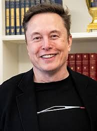

UNITED STATES BIGGEST BILLIONAIRE :- ELON MUSK

🚀 Elon Reeve Musk – A Detailed Biography
🟢 Early Life & Education
Born: June 28, 1971, Pretoria, South Africa
Nationality: South African, Canadian, American
Parents: Maye Musk (model and dietitian) & Errol Musk (engineer)
📘 Education:
Attended Pretoria Boys High School.
Moved to Canada at 17 to attend Queen's University, later transferred to the University of Pennsylvania (UPenn):
B.A. in Economics (Wharton School)
B.Sc. in Physics
Started a Ph.D. in applied physics at Stanford University (California), but dropped out after 2 days to pursue entrepreneurship.
🧠 Vision & Traits
Known for extraordinary ambition, futuristic thinking, risk-taking, and relentless work ethic (famously worked 80–100 hours per week).
Often called a real-life Iron Man for his involvement in cutting-edge industries.
🏢 Major Companies & Ventures
🖥️ 1. Zip2 (1996)
A software company co-founded with his brother Kimbal.
Provided maps and business directories to newspapers.
Sold to Compaq for $307 million in 1999.
💰 2. X.com & PayPal (1999–2002)
Founded X.com, an online payment company.
Merged with Confinity to become PayPal.
Sold to eBay for $1.5 billion; Musk received ~$180 million.
🚀 3. SpaceX (2002–Present)
Founded Space Exploration Technologies Corp. (SpaceX) to reduce space transportation costs and enable Mars colonization.
Major achievements:
First private company to launch and return a spacecraft (Dragon).
First private company to send astronauts to the ISS (NASA collaboration).
Developed Falcon 9, Falcon Heavy, and Starship rockets.
Plans for Mars colonization and moon missions.
🚗 4. Tesla, Inc. (2004–Present)
Joined Tesla Motors (now Tesla, Inc.) as chairman, later CEO and lead product architect.
Pioneer in electric vehicles (EVs) and clean energy.
Key models: Model S, Model 3, Model X, Model Y, Cybertruck, and Semi.
Also leads Tesla Energy (solar panels, battery storage like Powerwall).
🌐 5. Neuralink (2016–Present)
Developing brain–computer interfaces (BCI) to help with neurological conditions and potentially merge humans with AI.
🌍 6. The Boring Company (2016–Present)
Builds underground tunnels for fast urban transportation using electric sleds (Hyperloop concept).
Created the Las Vegas Loop system.
📡 7. Starlink (under SpaceX)
Satellite internet constellation project.
Aims to provide global high-speed internet, especially in rural and underserved areas.
Over 5,000 satellites launched as of 2024.
🤖 8. xAI (2023–Present)
An artificial intelligence company founded to compete with OpenAI, focused on creating “truthful” AI.
💰 Wealth
Frequently ranks among the top 2 richest people in the world (along with Bernard Arnault and Jeff Bezos).
Net Worth: Varies (between $180–250+ billion).
Wealth comes mostly from Tesla stock and SpaceX valuation.
👨👩👧👦 Personal Life
Has 11 children with different partners, including singer Grimes.
Known for eccentric tweets, memes, and social media presence (X/Twitter).
Acquired Twitter in October 2022 for $44 billion; renamed it X.
🏆 Awards & Recognition
Time Person of the Year (2021).
Featured on Forbes, Fortune, and Bloomberg Billionaires Index.
Honorary titles and doctorates from several institutions.
🌍 Global Impact
Popularized electric cars and clean energy.
Commercialized space travel.
Pushing boundaries in AI, brain tech, and transportation.
Strong advocate for climate change action, but also controversial for statements on politics and economics.
🧪 Famous Quotes
“When something is important enough, you do it even if the odds are not in your favor.”
“I think it is possible for ordinary people to choose to be extraordinary.”
Click Here For More Billionaire